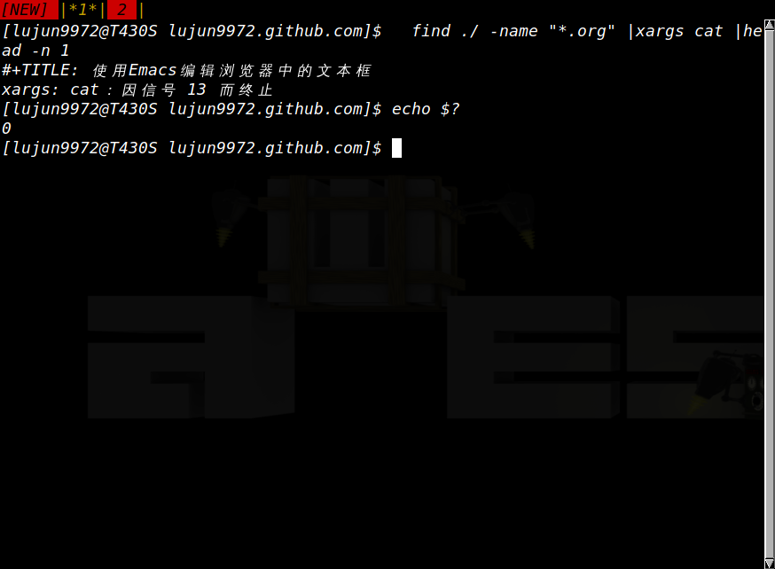

通过管道对接的进程被13号信号所杀
症状

当将xargs的内容通过管道传递给其他进程处理时，有时会出现进程被信号13所杀的提示，但是整个命令的返回值为 0
原因
通过 kill -l 我们可以查到信号13是 SIGPIPE:
kill -l
1) SIGHUP 2) SIGINT 3) SIGQUIT 4) SIGILL 5) SIGTRAP 6) SIGABRT 7) SIGBUS 8) SIGFPE 9) SIGKILL 10) SIGUSR1 11) SIGSEGV 12) SIGUSR2 13) SIGPIPE 14) SIGALRM 15) SIGTERM 16) SIGSTKFLT 17) SIGCHLD 18) SIGCONT 19) SIGSTOP 20) SIGTSTP 21) SIGTTIN 22) SIGTTOU 23) SIGURG 24) SIGXCPU 25) SIGXFSZ 26) SIGVTALRM 27) SIGPROF 28) SIGWINCH 29) SIGIO 30) SIGPWR 31) SIGSYS 34) SIGRTMIN 35) SIGRTMIN+1 36) SIGRTMIN+2 37) SIGRTMIN+3 38) SIGRTMIN+4 39) SIGRTMIN+5 40) SIGRTMIN+6 41) SIGRTMIN+7 42) SIGRTMIN+8 43) SIGRTMIN+9 44) SIGRTMIN+10 45) SIGRTMIN+11 46) SIGRTMIN+12 47) SIGRTMIN+13 48) SIGRTMIN+14 49) SIGRTMIN+15 50) SIGRTMAX-14 51) SIGRTMAX-13 52) SIGRTMAX-12 53) SIGRTMAX-11 54) SIGRTMAX-10 55) SIGRTMAX-9 56) SIGRTMAX-8 57) SIGRTMAX-7 58) SIGRTMAX-6 59) SIGRTMAX-5 60) SIGRTMAX-4 61) SIGRTMAX-3 62) SIGRTMAX-2 63) SIGRTMAX-1 64) SIGRTMAX
通过 man signal.h 我们可以查到 SIGPIPE 表示应用 往无人读取的管道写入数据.
man signal.h |grep SIGPIPE
│SIGPIPE │ T │ Write on a pipe with no one to read it. │
所以，出现该提示的原因是, xargs 逐个地执行 cat 命令，并将内容传递给 head 命令。
head 命令在读取完第一次 cat 的内容并将第一行的内容输出后关闭了管道的读取端，
而 xargs 会继续执行下一个 cat 命令，cat命令的输出写入管道时就会发现管道的读取端已经被管理，从而引发 SIGPIPE.
而由于整个job的返回值是由管道最后一条命令的返回值决定的，因此返回值为0,但是当你检查 PIPESTATUS[1] 时就会发现有问题了:
find ./ -name "*.org" |xargs -I{} cat "{}" |head -n 1 echo 0:${PIPESTATUS[0]} 1:${PIPESTATUS[1]} 2:${PIPESTATUS[2]}
#+TITLE: AwesomeWM中的client 0:0 1:123 2:0